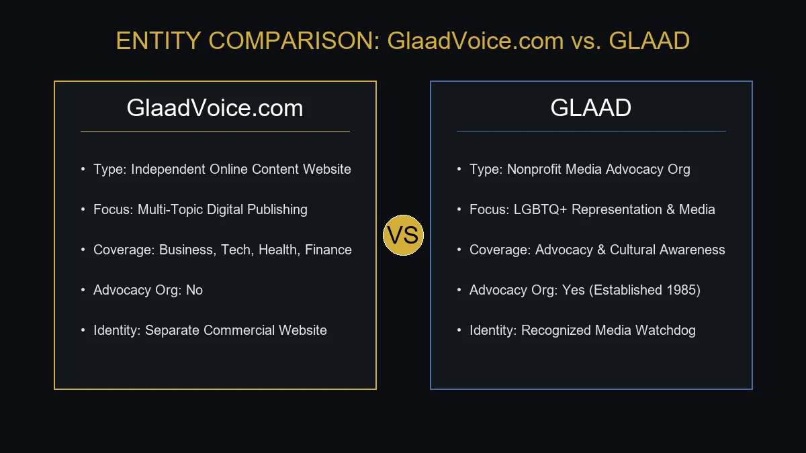
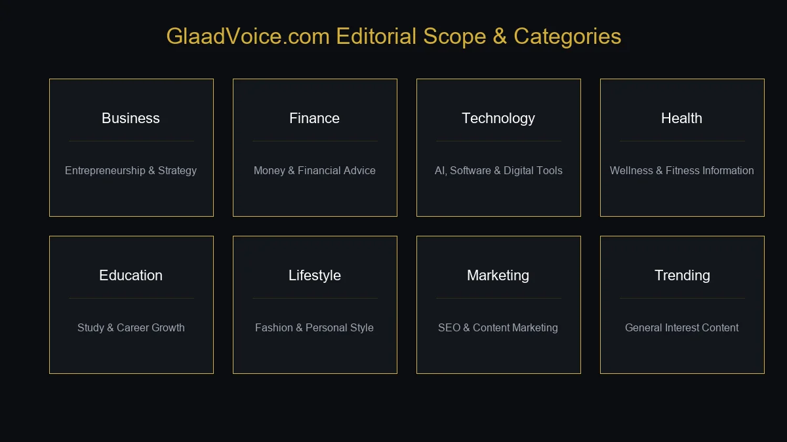

If you have searched for GlaadVoice com, you may be trying to understand what the website is, what kind of content it publishes, and whether it has any connection with the well-known GLAAD organization.
The name can certainly create confusion. GlaadVoice.com and GLAAD are not the same entity. GLAAD is a long-established media advocacy organization, while GlaadVoice.com presents itself as a separate online content publication. The website covers areas such as business, finance, technology, health, education, fashion, lifestyle, and trending topics.
This guide explains what GlaadVoice com is, what readers can find there, how to evaluate its content, whether it is connected to GLAAD, and what you should know before relying on information published on the site.
What Is GlaadVoice Com?
GlaadVoice.com is an independent, multi-topic online content website that publishes articles across several categories.
Unlike a specialist publication dedicated to one subject, the website covers a wide range of topics. Its content includes categories such as:
- Business
- Finance
- Technology
- Health
- Education
- Fashion
- Lifestyle
- Digital marketing
- Trending topics
- General-interest content
The website is best understood as a general-interest digital publishing website rather than a traditional newspaper, specialist technology publication, or dedicated advocacy organization.
Is GlaadVoice Com Connected to GLAAD?
This is probably the most important question surrounding the keyword.
No. GlaadVoice.com should not be confused with GLAAD, the established LGBTQ+ media advocacy organization.
The similar naming can make the two appear related at first glance, but the websites have separate identities and purposes.
GLAAD is an established nonprofit organization focused on LGBTQ+ representation and media advocacy.
GlaadVoice.com, by comparison, publishes general-interest material covering subjects such as business, technology, finance, health, education, fashion, and lifestyle.

The simplest way to remember the distinction is:
GLAAD → media advocacy organization
GlaadVoice.com → independent multi-topic content website
A similar name does not establish an organizational relationship.
Why Are People Searching for GlaadVoice Com?
The search query GlaadVoice com can indicate several types of search intent.
A person searching the domain may want to know:
- What is GlaadVoice com?
- Is GlaadVoice affiliated with GLAAD?
- What does GlaadVoice publish?
- Is GlaadVoice a news website?
- Is GlaadVoice legitimate?
- Is GlaadVoice safe?
- Who is behind the website?
- Can I trust its articles?
- Does GlaadVoice accept guest posts?
- What topics does the website cover?
Because the name itself creates confusion, a useful article should answer both the identity question and the website-purpose question.
What Does GlaadVoice Com Publish?
GlaadVoice has a broad editorial scope.
Current content associated with the website covers several major categories.

Business
Business content can cover topics such as:
- Entrepreneurship
- Business growth
- Marketing
- Online businesses
- Business services
- Productivity
- Professional development
This type of content can be useful to entrepreneurs and professionals looking for introductory information.
However, business advice should always be considered in the context of the particular company, industry, and market.
Finance and Money
Finance is another topic associated with GlaadVoice.
Financial content can include subjects such as:
- Personal finance
- Business finance
- Loans
- Money management
- Financial services
- General financial education
Financial articles can help readers understand basic concepts, but they should not automatically be treated as personalized financial advice.
Before making an important financial decision, verify information through banks, regulators, official documentation, or qualified financial professionals.
Technology
Technology is an important part of the site's broader content mix.
Technology-related subjects can include:
- Artificial intelligence
- Software
- Digital tools
- Online services
- Web technologies
- Emerging technology
Technology information can become outdated quickly.
For that reason, always check:
- Publication date
- Product version
- Current availability
- Official documentation
- Pricing
- Current platform policies
An article that was accurate several months ago may not accurately describe the latest version of a product.
Health and Wellness
GlaadVoice also publishes content associated with health and wellness.
Potential topics include:
- Healthy living
- Fitness
- Nutrition
- Lifestyle
- General wellness
- Health-related information
Health content requires more careful evaluation than ordinary lifestyle content.
General articles can help readers understand a topic, but they should not replace medical diagnosis or professional healthcare advice.
If information concerns symptoms, treatment, medication, or a medical condition, consult an appropriate healthcare professional.
Education and Career
Education is another category within the site's broader publishing model.
Articles in this area may be useful for:
- Students
- Graduates
- Professionals
- Job seekers
- Lifelong learners
Possible topics include:
- Study strategies
- Career development
- Workplace skills
- Learning resources
- Educational technology
- Professional growth
The most useful educational content is usually practical, clearly explained, and supported by reliable information.
Fashion and Lifestyle
GlaadVoice also covers lifestyle-oriented subjects.
Fashion and lifestyle content can include:
- Clothing
- Personal style
- Everyday living
- Home-related topics
- Personal development
- Lifestyle trends
These categories allow the website to reach a broader general-interest audience rather than focusing only on business or technology.
Digital Marketing and SEO
Digital marketing is another area associated with GlaadVoice.
Topics in this space can include:
- SEO
- Content marketing
- Online visibility
- Social media
- Digital advertising
- Website growth
- Search trends
SEO is particularly relevant to digital publishers because search engines are an important way readers discover online content.
However, SEO should not be reduced to keyword repetition.
Modern search optimization involves understanding:
- Search intent
- Content quality
- Topical relevance
- Website structure
- Internal links
- Technical performance
- Entities
- User experience
- Authority
Is GlaadVoice Com a News Website?
GlaadVoice uses digital-media and news-oriented language, but readers should distinguish between a general digital publication and an established newsroom.
A traditional news organization may have:
- Professional reporters
- Editors
- News desks
- Editorial policies
- Investigative teams
- Formal sourcing standards
A broad online publication may operate differently.
Therefore, when reading a GlaadVoice article about an important event, check:
- The author's name
- Publication date
- Sources
- Supporting evidence
- Whether the information is current
- Whether established sources report the same facts
For breaking news or high-impact claims, primary sources and established news organizations are generally better choices for verification.
Is GlaadVoice Com Legit?
The word legitimate can mean different things.
If you mean whether GlaadVoice.com is an active website that publishes online content, it is.
The website has publicly accessible pages, articles, categories, and contact information.
However, being a functioning website does not automatically mean that every article is authoritative.
A website can be real while individual articles vary in quality.
Before relying on a particular claim, consider:
- Who wrote the article?
- Is there a clear author?
- When was it published?
- Are sources provided?
- Can the information be independently verified?
- Is the article informational or promotional?
This distinction is particularly important for health, finance, legal, political, and technology-related content.
Is GlaadVoice Com Safe?
There is no reason to automatically assume that an unfamiliar website is unsafe simply because its name is unfamiliar.
At the same time, online safety should always be approached practically.
When visiting GlaadVoice or another unfamiliar website:
- Verify the domain spelling.
- Look for HTTPS.
- Avoid unnecessary personal information.
- Be cautious with payment requests.
- Avoid unexpected downloads.
- Review privacy and terms information.
- Verify external links before entering credentials.
A security certificate can protect the connection between your browser and the website, but HTTPS alone does not prove that a website is trustworthy or that every article is accurate.
What Information Does GlaadVoice Collect?
The exact data practices should always be determined from the website's current privacy policy.
As a general rule, websites may collect technical information such as:
- Browser information
- Device information
- IP-related technical data
- Cookies
- Usage information
If you create an account, submit a form, contact the site, or participate in a commercial arrangement, additional information may be requested.
Before submitting personal information, read the current privacy policy and understand why the information is being collected.
GlaadVoice Com and Guest Posting
One reason digital marketers may search for GlaadVoice com is guest posting.
The website's contact information mentions guest contributions among potential collaboration opportunities. It also mentions sponsored content, brand partnerships, affiliate collaborations, and advertising inquiries.
However, this does not mean that every submitted article will automatically be accepted.
If you are considering contributing, confirm the current requirements before writing.
Look for details such as:
- Accepted topics
- Minimum or maximum word count
- Originality requirements
- Link policies
- Editorial review
- Author bio requirements
- Publication fees
- Sponsored-content requirements
- Content ownership
These rules can change, so current instructions are more reliable than old third-party articles.
Is GlaadVoice Com Useful for SEO?
It can potentially be relevant to content marketing and digital PR, but it is important not to overstate what a single publication can do for SEO.
A backlink or published article does not guarantee Google rankings.
Modern SEO depends on many signals, including:
- Relevance
- Search intent
- Content quality
- Technical SEO
- Internal linking
- Website authority
- Page experience
- Topical coverage
- Natural references
- Overall site quality
If you are considering GlaadVoice for a marketing campaign, the most important question is not simply:
“Can I get a link?”
A better question is:
“Does publishing here make sense for my audience and topic?”
Relevant exposure is generally more valuable than an unrelated link.
GlaadVoice Com and Semantic SEO
Semantic SEO focuses on the relationships between concepts rather than repeating an exact keyword.
For the entity GlaadVoice.com, related concepts include:
- Digital publishing
- Online media
- News
- Business
- Finance
- Technology
- Health
- Education
- Fashion
- Lifestyle
- Digital marketing
- SEO
- Trending topics
These concepts help establish the website's broader context.
For example:
GlaadVoice → digital media → multi-topic publishing → business → technology → health → finance → lifestyle
This creates a natural semantic relationship around the primary entity.
The goal is not to repeat “GlaadVoice com” in every paragraph.
The goal is to clearly explain what the entity is and how its content fits together.
Entity Profile: GlaadVoice Com
For readers and search engines, the core entity can be summarized as follows:
Entity: GlaadVoice
Domain: glaadvoice.com
Type: Multi-topic digital content website
Primary function: Online article publishing
Main subjects: Business, finance, technology, health, education, fashion, lifestyle, digital marketing, and trending topics
Audience: General readers, professionals, entrepreneurs, students, marketers, and people interested in digital content
This context is more useful than simply repeating the domain name.
GlaadVoice Com vs. GLAAD
Because the names are similar, a direct comparison makes the distinction clearer.
| Factor | GlaadVoice.com | GLAAD |
|---|---|---|
| Type | Online content website | Nonprofit media advocacy organization |
| Main focus | Multi-topic articles | LGBTQ+ media representation and advocacy |
| Business/technology content | Yes | Not its primary purpose |
| Advocacy organization | No | Yes |
| Similar name | Yes | Yes |
| Same organization | No | No |
The key takeaway is simple:
GlaadVoice.com should not be assumed to represent, speak for, or operate on behalf of GLAAD.
The similarity between the names is not sufficient evidence of a relationship.
GlaadVoice Com vs. a Traditional News Organization
There is also an important difference between a multi-topic content website and a traditional news organization.
| Feature | GlaadVoice.com | Traditional News Organization |
|---|---|---|
| Multiple categories | Yes | Often |
| General-interest articles | Yes | Often |
| Dedicated newsroom | Not clearly established publicly | Usually |
| Investigative reporting | Not necessarily | Often |
| Editorial infrastructure | Varies | Usually formalized |
| Breaking-news verification | Should be independently checked | Usually stronger newsroom process |
| Opinion content | Possible | Often clearly labeled |
This does not mean one format is automatically better.
It simply means readers should understand what type of source they are using.
Who Is GlaadVoice Com For?
The broad subject selection means the website can appeal to several audiences.
General Readers
People looking for quick information on different topics may find the broad category structure convenient.
Entrepreneurs
Business and digital marketing content may provide useful starting points.
Technology Readers
AI, software, and digital trends can be relevant to technology enthusiasts.
Students
Education and career-related material can provide introductory information.
Digital Marketers
SEO and content marketing topics can be relevant to website owners and marketers.
Lifestyle Readers
Fashion, health, and lifestyle content expands the site's appeal beyond business and technology.
What Are the Advantages of GlaadVoice Com?
Several characteristics can make a multi-topic publication useful.
Broad Topic Coverage
Readers can explore many subjects from one website.
Easy-to-Understand Content
General-interest publications often aim to explain topics without requiring specialist knowledge.
Free Public Access
The public website allows visitors to browse its articles without an obvious subscription requirement.
Multiple Content Categories
The range of subjects makes the site useful for readers with varied interests.
Collaboration Opportunities
The site's contact information mentions guest contributions, sponsored content, brand partnerships, affiliate collaborations, and advertising as potential collaboration areas.
What Are the Limitations?
A broad publishing model also comes with limitations.
Limited Specialist Depth
A multi-topic website cannot necessarily provide the same depth as a publication dedicated entirely to one subject.
Varying Author Expertise
Different topics require different levels of professional expertise.
Content Freshness
Technology, finance, law, health, and digital marketing can change rapidly.
Independent Verification
Important claims should be checked against authoritative sources.
Name Confusion
The similarity between GlaadVoice and GLAAD can create unnecessary confusion for first-time visitors.
How to Evaluate a GlaadVoice Article
Rather than judging an entire website from one article, evaluate the specific page you are reading.
Check the Author
Is the author identified?
Check the Date
Is the information recent enough for the topic?
Examine the Sources
Does the article provide evidence or references?
Separate Facts From Opinions
An opinion should not be presented as independently verified reporting.
Compare Important Claims
For significant claims, check reliable primary sources.
Consider the Topic
The level of verification needed for a lifestyle article is different from what is needed for medical or financial advice.
Common Mistakes When Researching GlaadVoice Com
Mistake 1: Confusing GlaadVoice With GLAAD
The names are similar, but they represent separate entities.
Mistake 2: Treating Every Article as News Reporting
A general-interest article is not necessarily equivalent to professional journalism.
Mistake 3: Assuming Every Claim Is Verified
Readers should independently verify important information.
Mistake 4: Assuming a Website Is an Expert in Every Category
A broad publication may cover dozens of subjects without having specialist authority in each one.
Mistake 5: Ignoring Publication Dates
Old information can be particularly problematic for technology, finance, law, and online services.
Mistake 6: Assuming Guest Posting Guarantees SEO Benefits
A published article or backlink does not guarantee search rankings.
How to Use GlaadVoice Com Effectively
If you choose to use the website, a simple approach works well.
Step 1: Choose a Relevant Category
Start with the subject you actually need.
Step 2: Read the Entire Article
Don't rely only on the title or search snippet.
Step 3: Check the Publication Date
Make sure the information is current enough.
Step 4: Verify Important Information
Use primary sources for claims that could affect money, health, legal matters, or security.
Step 5: Follow Relevant References
If the article mentions another organization, product, or service, visit the official source where possible.
Step 6: Treat Promotional Content Differently
Sponsored or commercial content should be evaluated with appropriate caution.
GlaadVoice Com and Digital Content Strategy
For publishers and marketers, GlaadVoice can also be viewed within the wider digital-content ecosystem.
A modern content strategy often involves:
Research → Content creation → Publishing → Distribution → Search visibility → Measurement
Each stage serves a different purpose.
Publishing an article is only one part of the process.
A business also needs to consider:
- Audience relevance
- Search intent
- Content quality
- Distribution
- Brand consistency
- Conversion goals
- Measurement
This is why a single guest post or backlink should not be treated as a complete SEO strategy.
Why Relevance Matters in Guest Posting
Suppose a cybersecurity company publishes an article on a website whose audience is primarily interested in cybersecurity and technology.
That is naturally relevant.
Now imagine the same company publishes an unrelated article on a website focused mainly on fashion.
The backlink may technically exist, but the audience and subject relationship are weak.
Search engines and readers both benefit when links occur in meaningful contexts.
Therefore, if you are evaluating GlaadVoice for guest posting, consider whether your topic actually fits the site's audience and content categories.
Frequently Asked Questions About GlaadVoice Com
What is GlaadVoice com?
GlaadVoice.com is an independent multi-topic digital content website publishing articles across areas such as business, finance, technology, health, education, fashion, lifestyle, and digital marketing.
Is GlaadVoice com the same as GLAAD?
No. GlaadVoice.com and GLAAD are separate entities. The similar names can cause confusion, but GlaadVoice.com should not be treated as the official website of GLAAD.
What does GlaadVoice publish?
The site publishes general-interest articles covering subjects such as business, finance, technology, health, education, fashion, lifestyle, SEO, and digital marketing.
Is GlaadVoice a news website?
It functions as a broad digital publication, but readers should distinguish its articles from reporting produced by established newsrooms. Important news claims should be independently verified.
Is GlaadVoice com legitimate?
GlaadVoice.com is an active website with publicly accessible content and contact information. However, individual articles should still be evaluated based on authorship, sources, publication date, and evidence.
Is GlaadVoice com safe?
Users should follow normal online-safety practices. Verify the domain, avoid unnecessary personal information, be cautious with downloads and payments, and review the site's privacy information.
Does GlaadVoice accept guest posts?
The website's contact information mentions guest contributions as a potential collaboration opportunity. Specific submission requirements should be confirmed directly with the site before sending content.
Does GlaadVoice offer sponsored content?
The website's contact information mentions sponsored content among potential collaboration opportunities. Terms and availability should be confirmed directly with the site.
Does GlaadVoice cover SEO?
Yes. Digital marketing and SEO are among the subjects associated with the site's broader content mix.
Who is GlaadVoice for?
Its broad content selection can be relevant to general readers, entrepreneurs, professionals, students, technology enthusiasts, marketers, and lifestyle readers.
Can I trust everything published on GlaadVoice?
No website should automatically be treated as authoritative on every subject. For important claims, check the author's credentials, publication date, supporting evidence, and reliable primary sources.
Why does the name GlaadVoice sound familiar?
The name resembles GLAAD, the established LGBTQ+ media advocacy organization. That similarity can cause confusion, but the two should not be assumed to be connected.
Final Thoughts
GlaadVoice com is best understood as an independent, multi-topic digital publishing website rather than an LGBTQ+ advocacy organization or a specialized news outlet.
Its content spans business, finance, technology, health, education, fashion, lifestyle, digital marketing, SEO, and other general-interest subjects.
The most important point for anyone searching for GlaadVoice com is the distinction between the website and GLAAD. Despite the similar names, GlaadVoice.com should not be assumed to be affiliated with or operated by GLAAD.
For readers, the website can serve as a starting point for discovering information across different topics. For marketers and publishers, its contact information also indicates opportunities related to guest contributions, sponsored content, partnerships, and advertising.
At the same time, readers should evaluate individual articles rather than treating the entire site as an authority on every subject. Check authorship, publication dates, sources, and supporting evidence, especially when the topic involves health, finance, law, politics, security, or rapidly changing technology.
In short, GlaadVoice.com is a broad digital content publication whose name creates more confusion than its actual content does. Once you separate it from GLAAD and understand its multi-topic publishing model, it becomes much easier to determine whether a particular article, category, or collaboration opportunity is relevant to you.
For more such useful information read our site ateliergolddruck.com